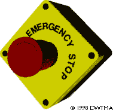
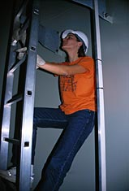

Wind Turbine Occupational Safety

Towers
Large, modern wind turbines normally use conical tubular steel
towers. The primary advantage of this
tower over a lattice tower is that it
makes it safer and far more comfortable for service personnel
to access the wind turbine for repair and maintenance. The disadvantage
is cost.
 The primary danger in working with wind turbines
is the height above ground during installation work and when
doing maintenance work.
The primary danger in working with wind turbines
is the height above ground during installation work and when
doing maintenance work.
 New Danish wind turbines are required to
have fall protection devices, i.e. the person climbing
the turbine has to wear a parachutist-like set of straps.
New Danish wind turbines are required to
have fall protection devices, i.e. the person climbing
the turbine has to wear a parachutist-like set of straps.
 The straps are connected with a steel wire
to an anchoring system that follows the person while climbing
or descending the turbine.
The straps are connected with a steel wire
to an anchoring system that follows the person while climbing
or descending the turbine.
 The wire system has to include a shock absorber,
so that persons are reasonably safe in case of a fall.
The wire system has to include a shock absorber,
so that persons are reasonably safe in case of a fall.
Photograph
© 1999 Soren Krohn
 A
Danish tradition (which has later been taken up by other manufacturers),
is to place the access ladders at a certain distance from the
wall. This enables service personnel to climb the tower while
being able to rest the shoulders against the inside wall of the
tower.
A
Danish tradition (which has later been taken up by other manufacturers),
is to place the access ladders at a certain distance from the
wall. This enables service personnel to climb the tower while
being able to rest the shoulders against the inside wall of the
tower.
 In this image you see the editor of our Spanish
web site verifying that this is actually a very practical solution.
In this image you see the editor of our Spanish
web site verifying that this is actually a very practical solution.
 Protection from the machinery, fire protection
and electrical insulation protection is governed by a number
of national and international standards.
Protection from the machinery, fire protection
and electrical insulation protection is governed by a number
of national and international standards.
 During servicing it is essential that the
machinery can be stopped completely. In addition to a mechanical
brake, the rotor can be locked in place with a pin, to prevent
any movement of the mechanical parts whatsoever.
During servicing it is essential that the
machinery can be stopped completely. In addition to a mechanical
brake, the rotor can be locked in place with a pin, to prevent
any movement of the mechanical parts whatsoever.

|
Back | Home
| Forward |
© Copyright 2000 Soren Krohn.
All rights reserved.
Updated 9 September 2000
http://www.windpower.org/tour/wtrb/safety2.htm